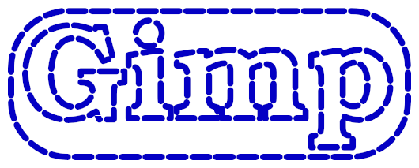
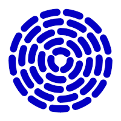

This script renders all the frames necessary to generate a moving dashed line from a path, marquee-style.
The path can be obtained using on a text layer

but other sources are possible. This a good way to generate "spinners" if your web site is slow:

The script is started using the entry after right-clicking the target path in the Paths list menu.
The script strokes the path in Line mode (as in ),
shifting the dash offset for each frame. The path is stroked with the current foreground color.
Most menus are disabled if there is not at least a layer or channel in the image.
Adding a dummy layer has the downside that you must delete the layer before exporting the animation
(or even testing it with the Playback filter), and then add one back to execute another run.
Adding a dummy channel is a better work around:
New channel...If everything is disabled again, go to the Channels list and select the dummy channel again.
Reverse direction: makes the animation move in the opposite direction.
By default the animation moves in the order in which the path anchors are listed,
but if the path is the output of you may have little control
over that. You can use my ofn-path-edits script to reverse all or specific strokes.
Period length: the length of a dash+space unit. This value is subtly adjusted for each stroke
to be an exact divider of the stroke length, to avoid unsightly things
to happen on closed strokes.
Ratio: the relative length of the dash in the dash+space unit. This sets "raw" dash length,
so "cap" styles may make the dash
extend beyond this.
'Steps': the number of steps in the animation to shift the pattern by exactly one period.
Line width: the width of the line, in pixels
Cap style, Join style, Miter limit, and Anti-aliasing: the usual path stroking options.
Keep in mind that cap styles other than Butt extend the length of the dash by half a line width at
each end.
Opacity: the opacity of the rendering.
Background: how the layer is filled before the path is rendered
Layer Name: a pattern to name the layers (see below)
The layer name pattern specifies how the layers are named using specific processing data. In the pattern, names in braces are replaced by the values of these data for the path. For instance, a pattern of Frame-{step1}/{count} will produce the name Frame-3/50 for the 3rd step in a series of 50.
The available values are:
pathName: the name of the source path
count: the total number of steps
step0, step1: the step number..
step0 starts at 0 (as computers count) and
step1 starts at 1 (as humans count).
period: the length of the dash+space period, in pixels
ratio: the dash to period ratio (from 1 to 99)
The name pattern is actually directly used as a Python format specification, so modifiers can be used. The
most useful modifier for numbers is the ability to define a minimal length with zero-padding. This is done by
adding :0Nd to the variable name in the braces, for instance {step1:03d} will insert the step number on
at least three digits, with zeros added to the left if necessary: 001, 013, 099, 100.